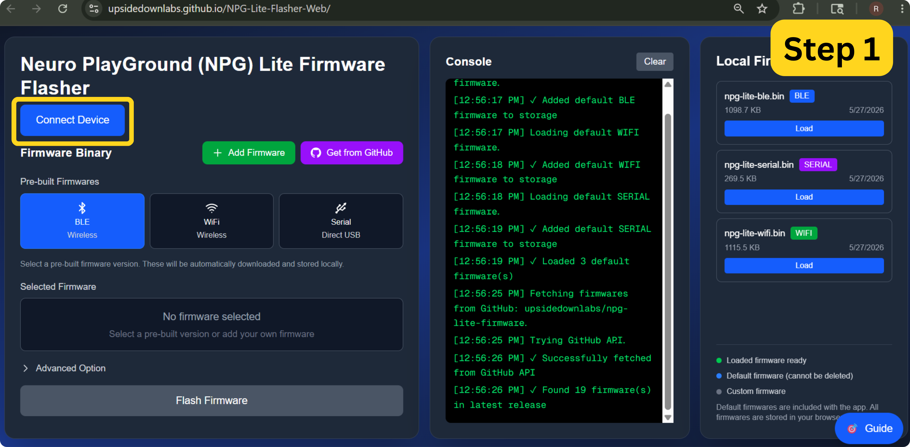
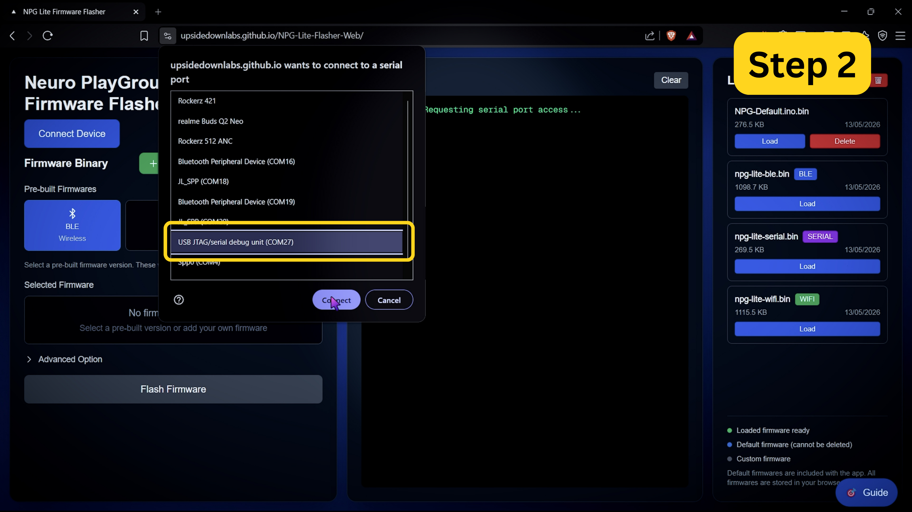
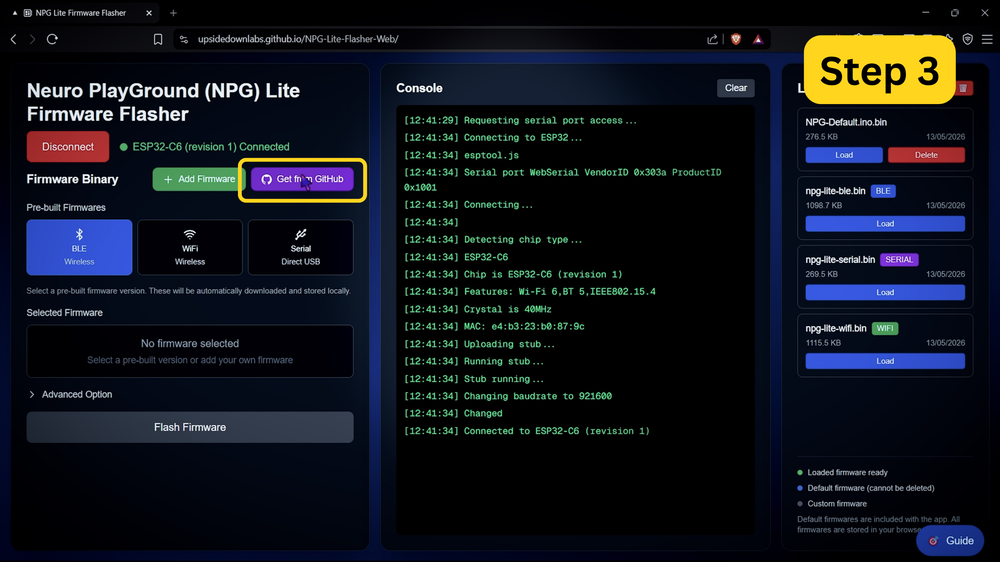
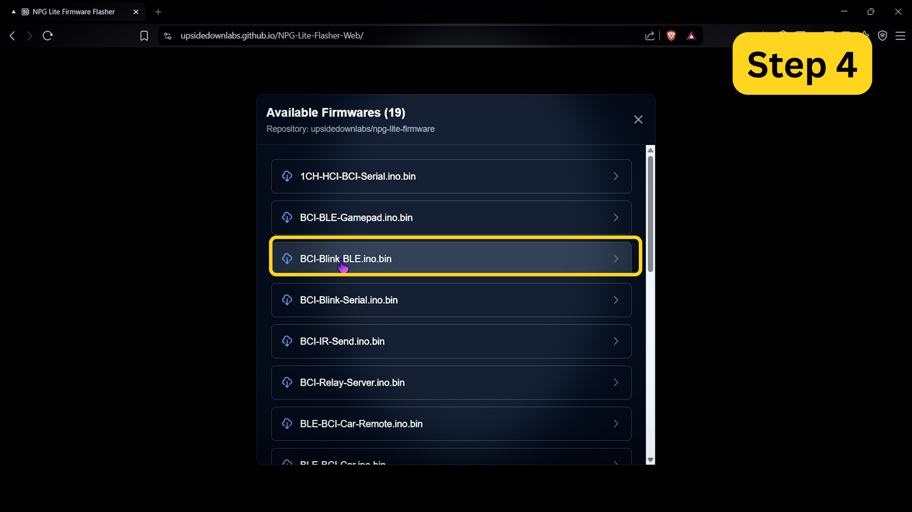
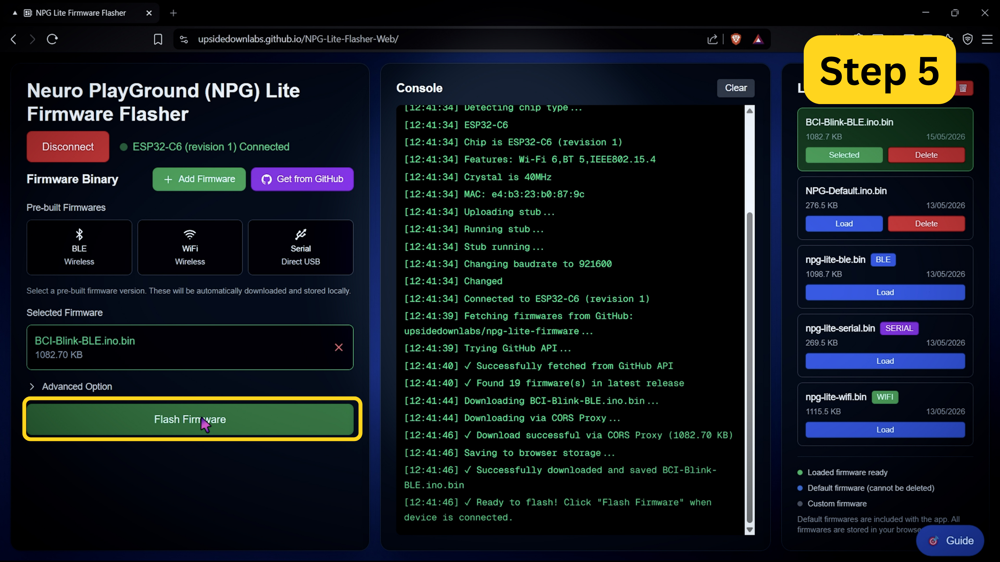
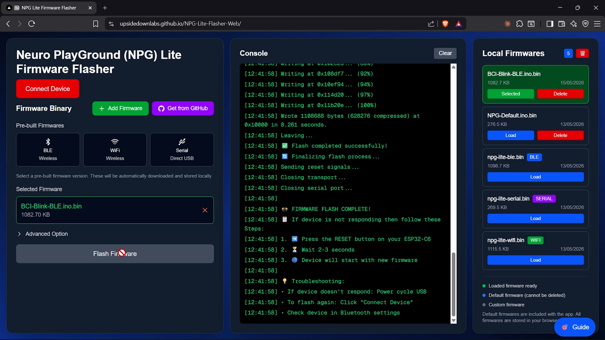
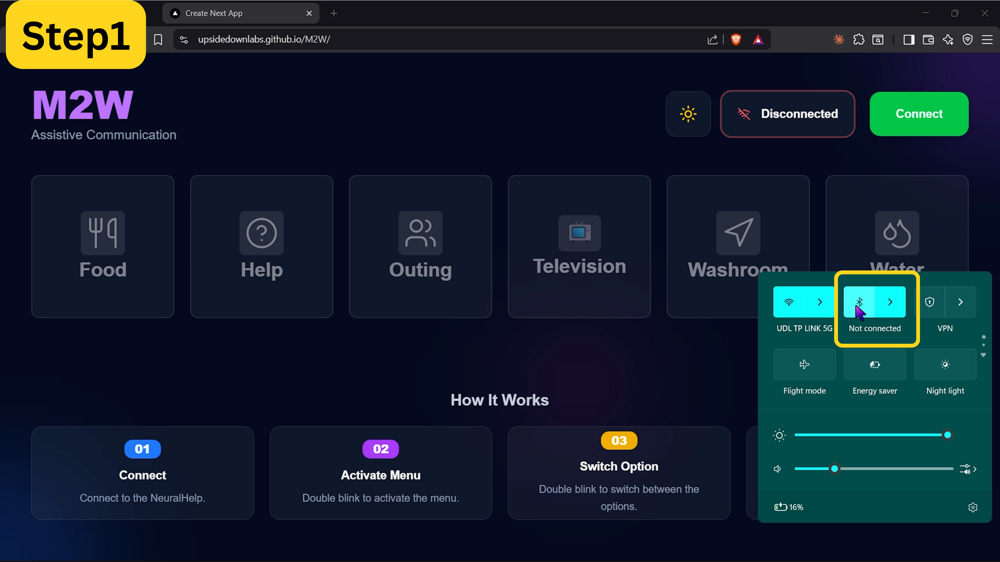
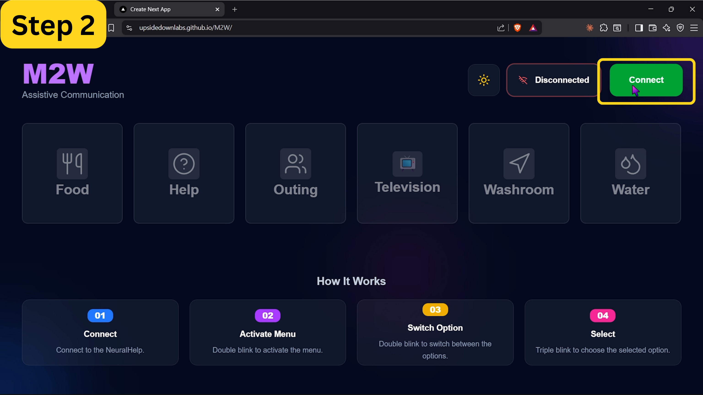
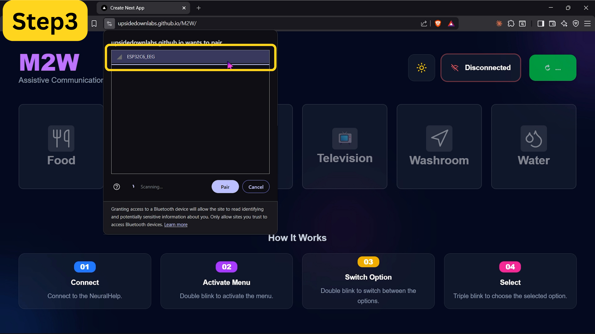
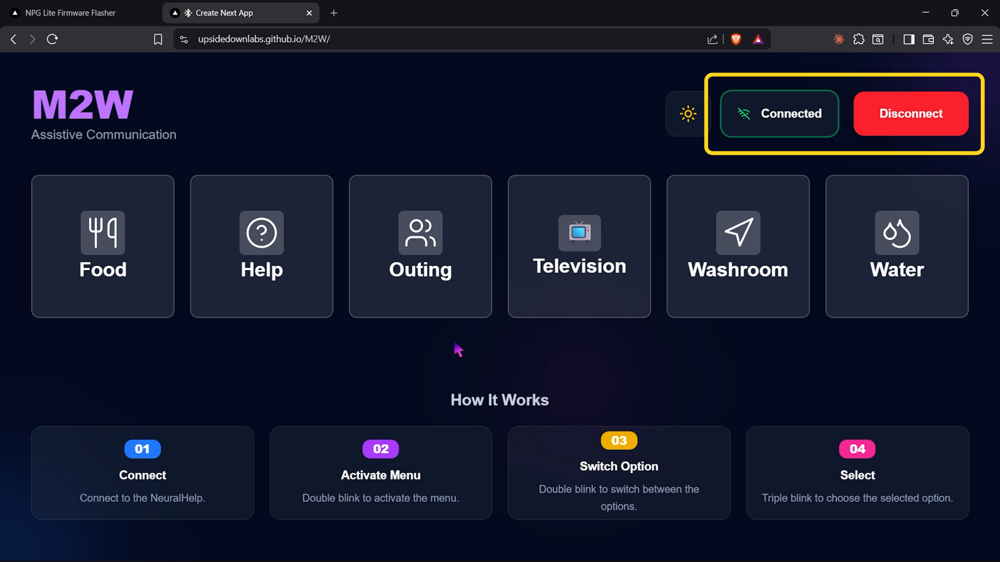

M2W#
Overview#
M2W (Mind to Words) is a free, browser-based assistive communication app for people who cannot speak or move, such as ALS patients. It connects to Neuro PlayGround Lite over Bluetooth and reads a single blink-detection channel from the forehead. A menu of everyday needs (Food, Help, Outing, Television, Washroom and Water) is navigated entirely with eye blinks, and the app speaks the selected need out loud.
Open the app at upsidedownlabs.github.io/M2W.
Features#
Feature |
Description |
|---|---|
Wireless |
Connects to the NPG Lite over Bluetooth Low Energy (BLE). |
Blink-only Control |
Double blink to open and move through the menu, triple blink to select. No hands, mouse or keyboard needed. |
6 Need Categories |
Food, Help, Outing, Television, Washroom and Water, each with its own spoken audio. |
Spoken Feedback |
Plays a sound for the selected need, so the person nearby hears it announced. |
Light and Dark Theme |
Switch between light and dark mode. |
Zero Install |
Runs entirely in the browser as a static web app. Nothing to download or set up. |
Hardware Requirements#
Neuro PlayGround Lite (Explorer, Ninja or Beast pack), only 1 channel is needed
BioAmp snap cables and gel electrodes (2 for the signal, plus 1 reference)
NuPrep skin preparation gel (optional) and alcohol swabs
USB Type-C cable
Phone or laptop with Bluetooth
Software Requirements#
A Chromium-based browser with Web Bluetooth support: Chrome, Edge, Brave, etc. On iOS, use a BLE-enabled browser such as Bluefy.
BCI-Blink-BLE firmware flashed on the device, using NPG-Lite-Flasher-Web or the NPG Lite Flasher desktop app.
Setting up the hardware#
Flashing the firmware#
Turn on your NPG Lite using the power switch and make sure the battery is connected correctly.
Connect the NPG Lite to your computer with the USB Type-C cable.
Open NPG-Lite-Flasher-Web in a Chromium-based browser, then click Connect Device.

Connect Device#
Select the USB device named USB JTAG and click Connect.

Select the USB JTAG Device#
Once connected, click Get from GitHub to browse the available firmware.

Get From GitHub#
Select BCI-Blink-BLE.ino.bin from the list. This is the blink-detection firmware M2W needs.

Select BCI-Blink-BLE.ino.bin#
Click Flash Firmware and wait for it to finish uploading.

Flash Firmware#
Once you see Flash completed successfully! in the console, disconnect the USB cable.

Flash Completed#
Preparing your skin#
Good skin preparation improves electrode contact and gives a much cleaner signal.
Clean the areas where the electrodes will go with an alcohol swab or wet wipe.
For an even better signal, you can first apply a small amount of NuPrep skin preparation gel and then clean the skin.
Let the skin dry before placing the electrodes.
Tip
For more details, see Skin Preparation and Using Gel Electrodes.
Placing the electrodes#
Place the positive electrode (IN+, red) on the centre of your forehead, the negative electrode (IN-, black) behind one ear, and the reference electrode (REF, yellow) behind the other ear.

Electrode Placement#
Connecting the cables#
Connect the cables to Channel 1 on the NPG Lite: red to A0P, black to A0N, and yellow to REF.
Connecting to M2W#
Turn on NPG Lite by flipping the switch on it. Make sure it is not connected to a charger.
Make sure Bluetooth is enabled on your computer or phone. Do not pair or connect to NPG Lite from your system Bluetooth settings, only connect through the browser.
Open M2W in a Chromium-based browser.

Open M2W#
Click Connect at the top right of the app.

Connect#
Select ESP32C6_EEG from the browser’s Bluetooth pairing popup and click Pair.

Pair Your NPG Lite#
Once connected, the status changes to Connected and you’re ready to use the menu.

Connected#